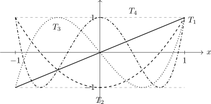

3.4 Chebyshev Polynomials of the First Kind
Definition 3.4.1. Chebyshev’s polynomials of the first kind denoted by \(T_n(x)\), are defined by \[T_n(x) = \cos \left (n\, \cos ^{-1}x\right ),\] \(n= 0,\, 1,\, 2,\, \cdots \) and \(0\leq \cos ^{-1}(x) \leq \pi \).
We immediately set that \(\, -1 \leq T_n(x) \leq 1\).
Theorem 3.4.2. \[T_n(x) = \frac {1}{2}\left [\left \{x + i\sqrt {1 - x^2}\right \}^n + \left \{x - i\sqrt {1 - x^2}\right \}^n\right ]\]
Proof. Let \(x = \cos \theta \). Then \begin {align*} T_n(x) = \cos \left (n\, \cos ^{-1}x\right ) & = \cos n\theta \\ & = \frac {1}{2}\left [e^{in\theta } + e^{-in\theta }\right ]\\ & = \frac {1}{2}\left [\left (e^{i\theta }\right )^n + \left (e^{-i\theta }\right )^n\right ]\\ & = \frac {1}{2}\left [\left \{\cos \theta + i\sin \theta \right \}^n + \left \{\cos \theta - i\sin \theta \right \}^n\right ]\\ & = \frac {1}{2}\left [\left \{x + i \sqrt {1 - x^2}\right \}^n + \left \{x - i\sqrt {1 - x^2}\right \}^n \right ]. \end {align*} □
Theorem 3.4.3. \[T_n(x) = \sum _{k =0 }^{\left [\frac {n}{2}\right ]}\frac {(-1)^n\, n!}{(2k)!\, (n-2k)!}\, (1 - x^2)^k\, x^{n-2k}.\]
Proof. From 4.4.2 \begin {align*} T_n(x) & = \frac {1}{2}\left [\left \{x + i\sqrt {1 - x^2}\right \}^n + \left \{x - i\sqrt {1 - x^2}\right \}^n\right ]\\ & = \frac {1}{2}\left [\sum ^{n}_{k = 0} \binom {n}{k}\, x^{n-k}\, \left \{i\sqrt {1 - x^2}\right \}^k \, + \, \sum _{k=0}^n\binom {n}{k}\, x^{n-k}\, \left \{-i\sqrt {1 - x^2}\right \}^k\right ]\\ & = \frac {1}{2}\sum ^n_{k=0}\binom {n}{k}\, x^{n-k}\, (1 - x^2)^{k/2}\, \left [1 + (-1)^k\right ] \, i^k\\ & = \frac {1}{2}\sum ^n_{k=0}\binom {n}{k}x^{n-k}(1-x^2)^{k/2}\left [1 + (-1)^k\right ]\, i^k. \end {align*}
Now when \(k = \) odd then \(1 + (-1)^k = 0\), and when \(k = \) even then \(1 + (-1)^k = 2\). Hence, \[T_n(x) = \frac {1}{2}\sum _{k = \, \text {even}\, \leq n} \binom {n}{k} x^{n-k}(1 - x^2)^{k/2}\, i^k \cdot 2\] But when \(k = \) even, we have \(k = 2s\) for some integers \(s\). \(k \leq n\) means that \(s \leq \frac {n}{2}\). Since \(s\) is an integer, \(s \leq \frac {n}{2}\) means \(s \leq \left [\frac {n}{2}\right ]\). Thus \begin {align*} T_n(x) & = \sum ^{\left [\frac {n}{2}\right ]}_{s = 0} \binom {n}{2s} x^{n-2s} (1 - x^2)^{s}\, i^{2s}\\ & = \sum ^{\left [\frac {n}{2}\right ]}_{s =0} \frac {n!}{(2s)!\, (n-2s)!}x^{n-2s}(1 - x^2)^s(-1)^s. \end {align*} □
Using theorem 4.4.3 we have \[ T_0(x) = 1, \hspace {0.5cm} T_1(x) = x, \hspace {0.5cm} T_2(x) = 2x^2 - 1, \hspace {0.5cm} T_3(x) = 4x^3 - 3x, \hspace {0.5cm} T_4(x) = 8x^4 - 8x^2 + 1,\] \[ T_5(x) = 16x^5 - 20x^3 + 5x.\]
- (a).
- \(T_n(1) = 1\)
- (b).
- \(T_n(-1) = (-1)^n\)
- (c).
- \(T_n(-x) = (-1)^n\, T_n(x)\)
- (d).
- \(T_{2n}(0) = (-1)^n\)
- (e).
- \( T_{2n+1}(0) = 0.\)
Proof. We use the definitions of \(T_n(x)\)
- (a).
- \(T_n(1) = \cos \left (n\, \cos ^{-1} 1\right ) = \cos (n\, (0)) = 1.\)
- (b).
- \(T_n(-1) = \cos \left (n\, \cos ^{-1}\, (-1)\right ) = \cos (n\pi ) = (-1)^n.\)
- (c).
- \(T_n(-x)\) \begin {align*} T_n(-x) & = \frac {1}{2}\left [\left \{-x + i\sqrt {1 - x^2}\right \}^n + \left \{-x - i\sqrt {1 - x^2}\right \}^n\right ]\\ & = \frac {1}{2}\left [(-1)^n\left \{x - i\sqrt {1 - x^2}\right \}^n + (-1)^n\left \{x + i\sqrt {1 - x^2}\right \}^n\right ]\\ & = (-1)^n\, T_n(x). \end {align*}
- (d).
- \(T_{2n}(0) = \frac {1}{2}\left [(i)^{2n} + (-i)^{2n}\right ] = \frac {1}{2}\left [(-1)^n + (-1)^n\right ] = (-1)^n\,\) by using 4.4.2
- (e).
- \(T_{n+1}(0) = \frac {1}{2}\left [(i)^{2n+1} + (-i)^{2n+1}\right ] = \frac {1}{2}\left [(-1)^n\, i - (-1)^n\, i\right ] = 0.\)
Exercise 3.4.5. Show that \(\, T_n(x)\,\) is a solution of Chebyshev’s equation \[(1 - x^2)\frac {d^2y}{dx^2} - x\frac {dy}{dx} + n^2 y = 0.\] Hint: let \(y = T_n(x)\).
Theorem 3.4.6 (Orthogonality property.). \[\int _{-1}^1\frac {T_m(x)\, T_n(x)}{\sqrt {1 - x^2}}\, dx = \begin {cases} 0, & m\neq n\\ \frac {\pi }{2}, & m = n \neq 0\\ \pi , & m = n = 0. \end {cases}\]
Proof. Let \(\, x = \cos \theta , \hspace {0.5cm} dx = -\sin \theta \, d\theta \,\,\) and \(\sqrt {1 - x^2} = \sin \theta \), so \begin {align*} \int _{-1}^1\frac {T_m(x)\, T_n(x)}{\sqrt {1 - x^2}}\, dx & = \int _{\pi }^0\frac {T_m(\cos \theta )\, T_n(\cos \theta )\, (-\sin \theta \, d\theta )}{\sin \theta }\\ & = \int ^{\pi }_0\cos n\theta \, \cos m\theta \, d\theta , \end {align*}
\begin {align*} T_n(\cos \theta ) = \cos \left (n\, \cos ^{-1}(\cos \theta )\right ) & = \cos n\theta \\ & = \frac {1}{2}\int _0^{\pi }\left [\cos (m+n)\theta + \cos (n-m)\theta \right ]\, d\theta \\ & = \frac {1}{2}\left [\frac {\sin (m+n)\theta }{m+n} + \frac {\sin (n-m)\theta }{n-m}\right ]^{\pi }_0\\ & = 0, \hspace {0.6cm} m\neq n. \end {align*}
If \(m = n \neq 0\), we have \begin {align*} \int _{-1}^1T_n(x)\, T_n(x)\, dx & = \int _0^{\pi }\cos ^2 n\theta \, d\theta \\ & = \int _0^{\pi }\frac {1}{2}(1 + \cos 2n\theta )\, d\theta \\ & = \frac {\pi }{2}. \end {align*}
If \(m = n = 0,\) \[\int ^1_{-1}\frac {T_0(x)\, T_0(x)}{\sqrt {1 - x^2}}\, dx = \int ^{\pi }_0 d\theta = \pi .\] □
Theorem 3.4.7 (Recurrence Relations).
- (a).
- \(T_{n+1}(x) - 2xT_n(x) + T_{n-1}(x) = 0\)
- (b).
- \((1 - x^2)T_n'(x) = -nxT_n(x) + nT_{n-1}(x).\)
Notice that \[x = \cos \theta \, \implies \, \begin {cases} T_{n+1}(x) & = \cos (n+1)\theta \\ T_{n-1}(x) & = \cos (n-1)\theta . \end {cases}\]
- (a).
- Show that \[\, T_{m+n}(x) + T_{n-m}(x) = 2\, T_m(x)\, T_n(x).\]
- (b).
- Show that \[2\left \{T_n(x)\right \}^2 = 1 + T_{2n}(x).\]
- (c).
- Show that \[\left \{T_n(x)\right \}^2 - T_{n+1}(x)\, T_{n-1}(x) = 1 - x^2.\]
- (d).
- Show that \[T_m(T_n(x)) = T_n(T_m(x)) = T_{m+n}(x).\]
- (e).
- Let \(\{T_n(x)\}^{\infty }_{n=0}\) be a sequence of the Chebyshev polynomials of the first kind. Let
\[\xi _i = \cos \left [(2i - 1)\frac {\pi }{2n}\right ]\, , \hspace {0.4cm} i = 1,\, 2,\, \cdots \, n.\]
- (i).
- Verify that \(\xi _1, \, \xi _2, \, \cdots \, , \, \xi _n\) are zeros of \(T_n(x)\) that is \(\,T_n(\xi _i) = 0\,\) for \(i = 1, \, 2, \, \cdots \, , \, n\).
- (ii).
- Show that \(\xi _1, \, \xi _2, \, \cdots \, , \, \xi _n\) are simple zeros of \(\,T_n(x)\). i.e \(\,T_n'(\xi _i) \neq 0, \hspace {0.3cm} i = 1, \, 2,\, \cdots \, , \, n.\)

Questions on this section
Stuck on something here? Ask below and it stays attached to this topic.